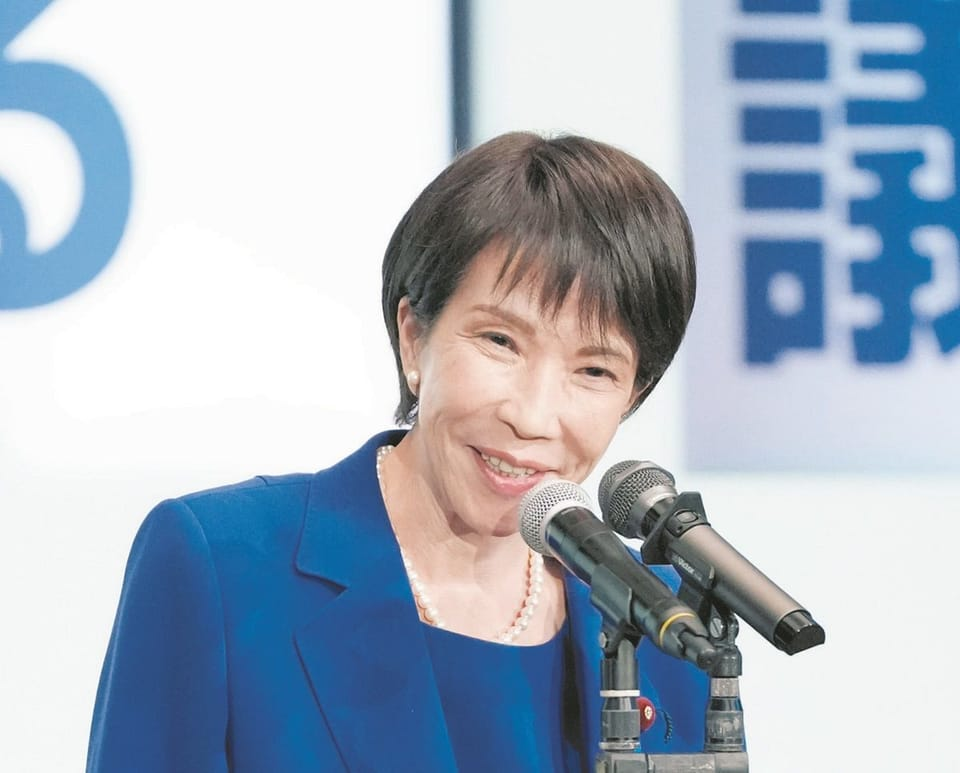

世界苦茶10月04日新闻 | 36条 | 哈马斯接受美国停火协议

哈马斯接受美国停火协议 | 高市早苗可能成为日本首个女性首相 | 美国政府关门恐持续相当时间 | 英国任命史上首位坎特伯雷大主教
苦茶数据
美元兑人民币：7.12（昨日7.13，前日7.12）
美元兑日元：147.22（昨日147.63，前日147.07）
上证指数：休市（昨日3882，前日3862）
标普500指数：休市（昨日6715，前日6711）
比特币：122440（昨日120106，前日118850）
布伦特原油：64.35（昨日65.64，前日65.50）
中国新闻
• 中印恢复直飞航班，作为修复关系的最新举措。
中印直航恢复，双方谨慎修复关系 主要城市航线将于本月晚些时候重启，结束世界两人口大国之间长达五年的停飞 印度外交部表示，航班将根据指定航空公司的商业需求和“运营标准”获得批准。印度最大航空公司IndiGo周四表示，将于10月26日恢复飞往中国的航班，开通印度东部加尔各答与中国南部广州之间的航线。若获批准，IndiGo还计划很快开通新德里至广州的直飞航班；据印度媒体报道，另一家大型航空公司印度航空则计划在年底前恢复德里至上海的直飞航班。外交部称，航班有望促进民间往来，并为两国关系的逐步正常化铺平道路。
• 警告游客：韩国“极右”反华抗议活动增多。
韩国首尔中国大使馆发出警告：在周五将有一场示威活动，人群可能激增。数月来，首都已发生多起涉及数百名抗议者的示威，口号包括“China out”。大使馆周四在官网发布声明称，周五在首尔市中心的某处预计将举行一场集会。声明指出：“我们遗憾地注意到，某些韩国政治人物传播虚假信息，某些极右翼团体时而在明洞和大林洞等中国游客聚集的地区组织反华示威。”“这些抗议者选择在中国人民庆祝国庆和中秋的节日时段采取行动，别有用心，且不为民众所接受。” “大使馆在此再次提醒在韩中国游客及拟赴韩国的中国公民提高警惕，注意人身安全。
• 中国大陆一处军事基地发现新的模拟台湾政府建筑。
日本媒体报道说，北京在内蒙古的军事实训基地又新建了更多类似台湾重要政府建筑的设施，卫星图像显示，自2020年以来用于训练解放军士兵的模拟台湾政府院区规模近三倍扩张，这一动向显示对可能的台海冲突进行了更系统化的训练。据产经新闻报道，近年来北京在该基地新建了类似台湾外交部和国防部办公楼的设施。“随着这些新增建筑，模拟总统府办公楼的训练区域自2020年以来几乎扩大了近三倍，”报道写道。报道称，2022年7月的卫星图像显示，解放军在模拟领导人办公室和外交部周边设立路障，随后装甲车辆驶入该区域，同年8月的影像则显示“一支旅级部队正在进行与模拟守卫总统府的敌军发生对抗的训练”。
• 北京對美外交官劃下「四不」紅線 美國務院駁斥。
北京对美外交官划下“四不”红线 美国务院驳斥 2025年10月3日新任美国驻港澳总领事伊珠丽遭港媒质疑会见“反中乱港分子”，中国外交部驻港特派员提出交涉。美国国务院回应，外交官代表美国在全球促进美国利益，是標准做法；流亡海外的民主派人士罗冠聪则向DW表示，香港民主诉求一直都是来自市民，而非受任何国家影响。週四，中国外交部驻港公署发声明指，驻香港特派员崔建春9月30日已约见美国驻港澳总领事伊珠丽，向她提出严正交涉，要求她“同反中乱港分子划清界限”。中方声明称，崔建春向伊珠丽提出“四不”要求，包含“不见不该见的人”，“不同反中乱港分子串联勾结”，“不得煽动，协助，教唆，资助反中乱港活动”。
印太新闻
• 高市早苗在日本自民党总裁选举中胜出，将是自民党历史上首位女性总裁，也将有望成为日本新首相。
• 网络攻击后，日本面临朝日啤酒短缺。
日本面临朝日啤酒产品短缺 因为一次重大网络攻击，日本正面临包括啤酒和瓶装茶在内的朝日产品短缺。自周一攻击影响其订货与配送系统以来，朝日集团在日本的大部分工厂已停工。包括7-Eleven和全家在内的主要日本零售商已警告顾客，预计朝日产品会出现短缺。朝日周五在一份声明中表示，"无法给出明确的恢复时间表"，但已开始"部分人工"处理订单与发货。朝日是日本最大的啤酒制造商，同时也生产软饮和食品，并为其他零售商提供自有品牌商品。其在英国拥有Fullers，并拥有Peroni，Pilsner Urquell和Grolsch等全球品牌。
• 济州岛与中国游客：负面情绪从何而来。
2025年10月3日近日，韩国政府对中国团体游客实施全境免签政策，允许停留15天。然而在韩国国内，也存在一些针对中国游客的负面情绪。这里以济州岛为例，聚焦这个离岛与中国游客之间充满矛盾的关系。济州岛，位于朝鲜半岛西南方约80公里处，是南韩最具代表性的度假岛屿，面积规模与中国海南省三亚市相近。这座火山岛的独特之处，在于短短一小时车程即可同时看山望海，四季分明。过去济州的主要外国游客来自日本，赌场顾客亦以日本人居多。然而自2002年韩日世界杯前夕，济州率先对中国公民开放30天免签后，中国游客逐步成为主力。“中国人让岛民不安”？近年来针对中国游客。
• 杀害柬埔寨反对派政治人物的泰国人被判终身监禁。
泰国法院判处杀害柬埔寨反对派政治人物者终身监禁 泰国一法院已判处一名男子终身监禁，罪名是于曼谷杀害一名著名柬埔寨反对派政治人物。今年一月，林金雅与妻子抵达泰国首都数小时后，在公共场所被泰国籍男子艾卡拉克·帕努伊当众射杀。艾卡拉克随后逃往柬埔寨，在当地被逮捕并遣返。法院周五表示，艾卡拉克最初被判处死刑，但因其对杀人供认，死刑被减为终身监禁。林金雅被杀的动机仍不清楚——尽管普遍怀疑这是一起具有政治动机的暗杀。柬埔寨的反对派政客和活动人士常遭监禁与骚扰，当局对政治异议几乎没有容忍度。林金雅持有柬埔寨和法国双重国籍，曾是柬埔寨主要反对党柬埔寨全国救援党的前议员。
科技新闻
• 报告称 TikTok 搜索将 13 岁青少年推向色情内容。
一份新报告发现，TikTok 通过其建议搜索词将年轻用户引向具有性暗示的内容——这是英国非营利监督组织 Global Witness 的一项调查结果。随着科技公司面临加强年龄验证的日益压力，Global Witness 于 10 月 3 日发布的调查称，其在英国设置了 7 个新的 TikTok 账号，以 13 岁未成年人身份在恢复出厂设置，无搜索历史的手机上使用该应用。Global Witness 表示，对于申报为 13 岁且使用“限制模式”浏览应用的用户，TikTok 的搜索建议“高度性化”。该报告发布之际，英美两国正推动更好地保护儿童的在线安全，与此同时。
• 为什么你需要关注 Sora 2。
如果你在媒体行业工作，或只是关心我们共同生活的信息生态质量，就必须关注 Sora 2。OpenAI 首席执行官山姆·奥特曼在宣布该产品的博客中写道：“对我们许多人来说，这感觉像是‘创意版的 ChatGPT’时刻。”许多早期测试者也持相同看法。Sora 2 集 AI 视频生成器、TikTok 挑战者和社交网络于一体。而现在，正是在奥特曼的推动下，信息流里充斥着奥特曼“换脸深度伪造”内容。Sora 2 也许只是另一个网络潮流，人们很快就会厌倦这种麻木现实的消遣。但更有可能的是，它代表了一种新的沟通形式。
• 比利时安全部门官员因间谍罪被起诉。
两名知情人士告诉POLITICO，一名比利时安全部门官员因间谍罪被逮捕并被起诉。他于周四被拘留，同日其住所被搜查。随后一名侦查法官在严格条件下将其释放。其一位知情人士称，指控与为中国从事间谍活动有关，且该名男子在比利时国家安全机构中的具体职务尚未披露，他因能够接触布鲁塞尔的国际外交圈而被招募。布鲁塞尔是许多欧盟机构和北约总部的所在地，约有100个国际组织和300个外国外交使团。此次逮捕发生之际，比利时安全机构正面临日益增加的压力。今年二月，比利时媒体《晚报》披露，2021年至2023年间，中国黑客入侵了国家安全系统，这被视为该机构有史以来最大的数据泄露事件。
• Apple下架了一款允许人们追踪并匿名报告美国移民与海关执法局特工目击信息的应用。
苹果和谷歌屏蔽了众包举报美国移民与海关执法局出没的应用程序。一些人警告称这会产生寒蝉效应。苹果和谷歌屏蔽了众包举报ICE出没的应用程序。一些人警告称这会产生寒蝉效应。苹果和谷歌在特朗普政府要求下架一款特别受欢迎的iPhone应用仅数小时后，封禁了可标记美国移民官员出没地点的手机应用下载。美国总检察长帕姆·邦迪表示，此类追踪会使移民与海关执法人员处于危险之中。但这些应用的用户和开发者表示，记录ICE在他们社区的行动是他们的第一修正案权利——并坚持认为，在唐纳德·特朗普总统在全国范围内加大强硬移民执法力度之际。
• 英伟达与富士通达成合作，共同开发人工智能机器人及其他技术。
英伟达与富士通同意在人工智能机器人等技术上展开合作 东京——美国科技公司英伟达与日本电信和计算机制造商富士通周五同意在人工智能领域合作，利用英伟达的计算芯片推出智能机器人及多种其他创新。“人工智能工业革命已经开始。为其提供动力的基础设施在日本及全球都至关重要，”英伟达首席执行官黄仁勋在台上与富士通首席执行官土田孝仁拥抱后说。“日本可以在人工智能和机器人领域引领世界，”黄仁勋在东京一家酒店对记者表示。双方将合作构建他们所称的“人工智能基础设施”，即各种未来人工智能应用所依托的系统，涵盖医疗，制造，环境。
经济新闻
• 美国司库称，1美元特朗普硬币“是真的”。
据美国财政部确认的首批图稿显示，为纪念美国2026年250周年，美国铸币局发行的纪念1美元硬币可能会以总统唐纳德·特朗普的肖像为图案。美国财务主管布兰登·比奇在X上回应硬币图片时发文称：“这里没有假新闻。纪念美国250周年和@POTUS的这些首批草图是真实的。期待在阻挠性关闭美国政府结束后尽快分享更多。” 草图显示硬币正面为特朗普侧面肖像，顶部刻有“Liberty”，底部为“In God We Trust”，并标注年份1776和2026。背面则为特朗普在宾夕法尼亚州布尔特遇刺未遂后举拳的著名画面，顶部写着“FIGHT FIGHT FIGHT”。
• 停摆已导致就业报告延迟。
政府停摆已导致就业报告延迟。更关键的报告可能也会被耽搁 政府停摆推迟发布月度就业报告 对跟踪就业市场的经济学家来说，每月的第一个星期五通常像圣诞节早晨。劳工部通常会在那天发布备受关注的就业与失业报告。但十月的第一个星期五只带来了一块“煤块”，因政府停摆而推迟了就业报告的发布。艾莉森·施里瓦斯塔瓦本该在早上8:30坐在电脑前，焦急地不断刷新屏幕等待报告，但那天早上却无事可做。“我想我只能慢慢啜咖啡，”这位求职网站Indeed的经济学家说。“带狗去更长时间的散步。” 就业报告包含大量信息 月度就业报告是政府最受关注的经济指标之一。当招聘人数强于或弱于预期时，它会影响金融市场。报告还提供大量细节。
• 北京抨击墨西哥的保护主义，并在美国胁迫背景下威胁报复。
北京抨击墨西哥保护主义并威胁报复，指责美国胁迫下中国在对墨措施上保持克制 中国谴责墨西哥近期针对中国产品的反倾销调查，并誓言“采取一切必要措施”保护中国企业正当权益。中国商务部周五在一份声明中表示：“中方坚决反对损害中国合法权益的保护主义做法。我们将密切关注墨方调查进展，督促墨方在调查过程中严格遵守世贸组织规则，维护中国企业的合法权益。” 声明指出，墨方今年对中国产品发起了11起反倾销调查——几乎是去年同类调查数量的两倍——并补充称中方在回应上一直保持克制。该表态是在墨方对浮法玻璃、PVC涂层织物等中国产品的反倾销调查之际发表的，正值北京与墨西哥城之间的贸易紧张迅速升级之时。
• 随着特朗普准备进行裁员和削减开支，迅速结束政府关门的希望逐渐破灭。
随着民主党在参议院投票中拒不让步，特朗普总统准备在整个联邦政府范围内实施裁员和削减措施，政府很快结束停摆的希望周五再次破灭。停摆进入第三天，参议院再次就一项旨在重启政府的共和党法案进行推进表决，结果以54票对44票失败——远低于结束阻挠并通过该法案所需的60票。与此同时，众议院议长迈克·约翰逊宣布，下周众议院将停止立法事务，此举旨在迫使参议院配合众议院共和党已通过的政府拨款法案。投票失败后，参议员们迅速离开国会山，预计周末不会再有更多投票，且几乎看不到结束国会僵局的实质性进展。相反，双方为一场长期停摆斗争作好准备，这将把联邦工作人员推向更大的不确定性，可能波及更广泛的经济。
• 欧洲在新一轮经济战争中寻找可被武器化的关键瓶颈。
欧洲寻觅可在经济战争时代对华作为武器化的瓶颈 官僚们正着手建立一份潜在瓶颈清单，作为对其他大国胁迫的威慑或反制手段，参与此事的官员称。“我们有被他国武器化的依赖，但他国也依赖我们，”欧盟首席贸易官萨宾·魏扬德上周在欧洲议会表示。“我们如何从被动反应转向主动出击，不仅仅是努力保护自己免受弱点影响，而是也利用我们的优势？” 针对“经济安全学说”的工作正值支撑欧盟建立的那套严格规则体系动摇之时。该集团在美国总统唐纳德·特朗普以贸易关税进行胁迫、中国对关键原材料的控制，以及俄罗斯入侵乌克兰可能蔓延为更广泛欧洲陆战的威胁之下，被夹得越来越紧。
• 基尔·斯塔默与纳伦德拉·莫迪在孟买峰会上寻求加强科技合作。
伦敦——多位熟悉筹划情况的人士告诉POLITICO，首相基尔·斯塔默将于下周在孟买会见印度总理纳伦德拉·莫迪，以推动双方在科技和安全领域的合作。这是斯塔默作为首相对印度的首次访问，距英印在唐纳德·特朗普关税战阴影下最终达成两国期待已久的贸易协定仅数月。印度一位获准匿名以便讨论计划的官员表示，此次访问将聚焦金融科技、“与科技相关的合作伙伴关系”以及“我们终于签署的伟大贸易协议”。
• 欧盟与印度贸易谈判进入收官阶段：五大看点。
唐纳德·特朗普的关税刺激了欧盟和印度，促使双方加紧大力推动尽快完成长期拖延的贸易协议。布鲁塞尔和新德里只剩下三个月时间来兑现他们共同承诺的目标，即在年底前达成协议——而最棘手的问题涉农业和可持续发展，尚未解决。尽管存在前所未有的政治意愿，政策制定者和专家也都承认，要顺利收官并非易事。
俄乌战争
• 在捷克人前往投票之际，乌克兰的弹药供应岌岌可危。
支持者在2025年9月30日于捷克布拉格的一次竞选集会上挥舞捷克国旗。捷克选民正前往投票，这次投票可能对该国的外交政策产生重大影响——尤其是其对乌克兰的坚定支持。最新民调显示，执政的亲西方联盟在定于10月3日至4日举行的议会选举后保住多数席位的机会很渺茫。希望接管政府的政党不仅承诺限制或取消对乌克兰的军事援助，有些甚至质疑捷克作为北约和欧盟成员国的身份。由寡头，前总理安德烈·巴比什领导的民粹运动ANO目前领跑，民调显示其支持率约为30%。巴比什是一位正面临欺诈调查并以对外政策立场不透明著称的强势商人，随着选民对经济和政府执政表现的担忧加剧。（翻评：点票了15%，寡头的民粹联盟大幅领先。）
• 在高额预算赤字背景下，俄罗斯9月的石油和天然气收入较去年同期下降25%。
俄罗斯最新经济动态：9月石油天然气收入同比下降25%，财政赤字高企 俄罗斯财政部10月3日公布，联邦预算在9月从石油和天然气税收中收入5825亿卢布，比去年同期下降25%。这一降幅发生在俄罗斯面临不断扩大的预算赤字之际，截至8月底赤字已达4.19万亿卢布，已超过政府全年目标。财政赤字迫使莫斯科削减了对2026年的计划军事支出。自1月以来，石油和天然气总收入已减少1.7万亿卢布，降至6.6万亿卢布。降幅持续加速，2025年前九个月达到21%。9月石油矿产资源税收入较去年下降32%，天然气税收入暴跌52%，出口关税收入也下降了27%。全球油价走低。
• 泽连斯基称，俄罗斯在入冬前发起大规模袭击，瞄准乌克兰能源基础设施。
泽连斯基称俄罗斯在冬季来临前对乌克兰能源基础设施发动大规模袭击 俄罗斯在10月3日对乌克兰的能源设施发动了大规模导弹和无人机袭击，乌克兰总统弗拉基米尔·泽连斯基在当晚讲话中说，指责莫斯科企图在寒冷季节来临前加剧平民苦难。“就在今天，俄罗斯用35枚导弹袭击了我们的天然气基础设施，其中包括弹道导弹。这是一次联合作战，仅有一半导弹被拦截，”泽连斯基在与乌克兰最高军事指挥会晤后说。泽连斯基表示，额外的袭击还波及切尔尼戈夫州和苏梅州，而弹道导弹则打击了顿涅茨克州的能源设施，包括克拉马托尔斯克、斯洛夫扬斯克和德鲁日科夫卡。10月3日早些时候，一次大规模的俄方空袭袭击了乌克兰的一些主要天然气生产设施。
• “我们不想与他们同命”——欧尔班表示，乌克兰入盟将把欧盟拖入与俄罗斯的战争。
“我们不想同他们一起承受这种命运”——奥尔班称乌克兰入盟会把欧盟拖入与俄战争 匈牙利总理维克多·奥尔班10月3日表示，匈牙利将反对乌克兰加入欧盟，警告称接纳基辅会把欧盟拖入与俄罗斯的战争。自俄罗斯对乌克兰发动全面入侵以来，奥尔班是为数不多仍与俄罗斯保持密切关系的欧洲领导人之一。奥尔班领导下的匈牙利一直反对乌克兰加入欧盟，并多次阻挠相关决定及对莫斯科的制裁。奥尔班在接受国营科舒特电台采访时表示：“乌克兰是一个命运非常艰难的国家。我们为什么要与他们共同承受这种艰难命运？我们有自己的命运，要比乌克兰人的容易得多。
• 因干预捷克选举，TikTok 封禁了部分账号。
布拉格——中国拥有的视频分享平台TikTok删除了数十个据称试图干预周五和周六举行的捷克议会选举的账号。捷克电信局告诉POLITICO，研究人员在TikTok上标记了数百个表现出不真实行为的账号，平台已删除了其中数十个。捷克的选举活动一直受到假新闻和宣传的困扰，手段包括将受制裁的俄罗斯来源内容直接翻译的虚假信息网站，以及在社交媒体上冒充候选人的机器人。
• 路透社报道，特朗普不太可能向乌克兰提供“战斧”远程巡航导弹。
路透社10月2日报道称，美国不太可能向乌克兰提供战斧远程巡航导弹。路透援引一名不愿具名的美方官员和另外三名熟悉相关讨论的消息人士的话称，战斧导弹多年来一直在乌克兰的武器愿望清单上，若获供应将大幅扩展基辅的远程打击能力。该消息发布数日后，美国副总统JD·万斯表示华盛顿正在考虑基辅对战斧的请求，战斧航程可达1600公里。据报道，乌克兰总统泽连斯基在9月23日联合国大会期间一次闭门会晤中曾就此事向特朗普施压。官员们对路透表示，尽管美国并不缺乏战斧导弹，但华盛顿更可能提供射程较短的系统，或允许欧洲盟国为乌方采购长程武器。据称美国现有库存已承诺用于美国海军。战斧是美军库存中的重要武器，能低空飞行。
世界新闻
• 在特朗普发出最后通牒后，哈马斯表示接受加沙和平计划的部分内容。
哈马斯10月3日晚对特朗普的“20点计划”做出正式回应。哈马斯同意释放所有以色列被扣押人质和遗体，并随时准备通过斡旋方开启谈判讨论细节。哈马斯同意将加沙管理权移交给独立的、基于民族共识、得到阿拉伯和伊斯兰国家支持的巴勒斯坦机构。不过哈马斯未说明是否会同意解除加沙的武装和非军事化，也未同意以色列分阶段撤军。哈马斯领导人表示，将向未来的巴勒斯坦国移交武器，并将就所有与行动和武器相关的问题进行谈判。特朗普随后发文，相信哈马斯已准备好实现持久和平，要求以色列必须立即停止轰炸加沙，以便安全迅速地解救人质。卡塔尔和埃及也对哈马斯的回应表示欢迎，并准备与美国协调，完成停火计划的讨论。以色列总理办公室称，以色列已准备好实施“特朗普立即释放所有人质计划的第一阶段”，并将继续与美国合作，按照“以色列提出的原则结束战争”。声明未提及特朗普要求立即停止轰炸加沙的呼吁。当地居民表示，在特朗普发出呼吁后，以色列仍然在轰炸加沙城和汗尤尼斯。
• 以色列已将四名加沙船队活动人士驱逐出境。
以色列驱逐四名加沙船队活动者 以色列外交部表示，因在护送援助抵达加沙的船队航行期间被拦截，四名意大利公民已被以色列驱逐出境。以色列警方称，共有470多人被拘留。外交部表示，当局正在对其他人进行驱逐程序。此次驱逐发生在“全球坚守船队”最后一艘船于周五早晨被以色列当局拦截之后。船队称以色列的拦截是非法的，而以色列则将船队的行为描述为“一种挑衅”。对该船队的封阻在全球引发抗议，包括意大利的总罢工。第一批船只于周三在距离加沙海岸约70海里的国际水域被拦截，其他船只则在更靠近海岸处被拦截。以色列一直在对该海域进行巡逻，但并不拥有该处的司法管辖权。以色列称其海军已告知这些船只改变航向。
• 声援加沙的大规模抗议和罢工使意大利陷入停摆。
罗马——周五，意大利部分地区爆发大规模罢工和全国性抗议，给执政的乔治娅·梅洛尼政府施加压力，要求其在以色列对加沙的战争问题上采取更强硬立场。工会成员、学生、激进团体和家庭在全国各城市封堵高速公路和交通枢纽，举着巴勒斯坦旗帜和写有“停止占领”的横幅。意大利最大工会CGIL表示，超过200万人参加了抗议。此前在以色列拦截Global Sumud Flotilla——这支由41艘船组成、试图向加沙运送人道援助的船队并拘留了20名意大利活动人士——之后，工会于周四号召举行总罢工。
• 卡罗琳·利维特称白宫必须因政府停摆而削减开支。
白宫新闻秘书卡罗琳·利维特表示，鉴于政府停摆，白宫必须削减开支 在联邦政府进入停摆第三天之际，白宫新闻秘书卡罗琳·利维特表示，特朗普政府别无选择，只能审视在哪些方面可以削减政府开支。在参议院未能通过短期拨款协议后，大部分联邦政府于周三停摆。尽管参议院由共和党掌控，但他们仍需部分民主党支持，才能达到通过拨款所需的60票。民主党领导层希望任何协议都包括延长数百万民众依赖的《平价医疗法案》补贴，并且撤销特朗普签署的“One Big Beautiful Bill Act”对卫生支出的削减。共和党人表示，他们希望在达成政府拨款协议后再就补贴问题进行谈判。白宫已提议在长期停摆情况下裁减联邦政府劳动力。
• 一名直播记者在被美国移民与海关执法局拘押数月后被驱逐回萨尔瓦多。
记录移民突袭而走红的萨尔瓦多记者马里奥·格瓦拉在联邦羁押数月后被驱逐出境。保护记者委员会向CNN证实，格瓦拉于周五清晨被驱逐回其祖国萨尔瓦多，此前三个多月前这位西语直播主在报道亚特兰大附近一次“No Kings”抗议时被捕。他在被捕后不久被转交给美国移民与海关执法局羁押。周五抵达圣萨尔瓦多机场后不久，格瓦拉被萨尔瓦多移民当局释放，预计不会被带往首都的移民收容设施。格瓦拉在萨尔瓦多对媒体表示，他感觉“坚强”，形容自己的处境既苦又甜。“我感到难过，但也很高兴能回到我的祖国。我的意思是，他们没有处决我。也许那个带有种族主义的政府想要处决我。我现在在我的祖国。所以归根结底，我认为这是种福气。
• 西班牙推动将堕胎权写入宪法。
西班牙首相佩德罗·桑切斯表示，他希望将堕胎权写入宪法，效仿去年成为全球首个采取这一历史性举措的法国。桑切斯在社交媒体发文称，他计划向议会提交一项将自愿终止妊娠权宪法化的提案。“在本届政府下，社会权利不会倒退，”他说。此言论发布之际，马德里市议会通过了一项措施，要求卫生中心在妇女考虑堕胎时告知所谓的“堕胎后创伤”。该措施获得中右的人民党和极右的沃克斯党的支持。
• 联合国粮食机构将于下月暂停对索马里75万人提供食品援助。
联合国粮食机构周五宣布，将在下月暂停对索马里75万人提供的粮食援助。肯尼亚内罗毕——联合国粮食机构周五表示，由于“严重的资金短缺”，该机构将削减对数十万索马里人的食品援助，而该国数百万人正面临气候变化造成的毁灭性影响和严重的饥饿状况。世界粮食计划署表示，因资金短缺，接受紧急粮食援助的人数将从8月的110万人减少到11月的35万人。“我们正看到处于紧急水平的饥饿呈危险上升态势，而我们的应对能力日益缩小，”该机构紧急准备与响应主任罗斯·史密斯说。
• 莎拉·穆拉利被任命为坎特伯雷大主教，成为首位女性出任该职。
萨拉·穆拉利被任命为坎特伯雷大主教，是首位女性担任该职 伦敦——萨拉·穆拉利被任命为新任坎特伯雷大主教，成为首位被选来领导全球8500万圣公会信徒的女性。她的任命由英格兰教会和英国政府于周五宣布。穆拉利由坎特伯雷大教堂的教士团选出，并经查尔斯三世国王批准。63岁的穆拉利曾是一名护士，直至今日仍担任伦敦主教，她是教会历史上第四位被按立为主教的女性。她同时在英国议会上院拥有席位。1999年，她成为英国首席护理官时的最年轻人。2018年作为伦敦主教发表就职布道时，穆拉利对会众表示，105年前，女权活动者曾试图在她刚登座的座位下炸毀一枚炸弹。
• 德国因发现无人机而关闭慕尼黑机场。
德国慕尼黑机场因疑似无人机目击短暂停航，巴伐利亚呼吁更强硬应对 责任编辑注：本条目已更新，加入巴伐利亚州长马库斯·索德尔的表态。慕尼黑机场官员表示，因当晚在机场附近出现可疑无人机目击，慕尼黑机场于10月2日晚暂时停止运行。此次关闭发生在近几日欧洲空域接连出现多起神秘无人机目击事件之后，包括9月26日发生在德国北部的一起。慕尼黑机场在一份声明中称，10月2日晚深夜有多起无人机目击报告，促使德国航管在当地时间晚10点左右先是限制航班运行，随后全面暂停。关闭导致17个航班被迫停飞，影响近3000名旅客。另有15个到达航班被改降至斯图加特，纽伦堡。
• 德国总理梅尔茨：德国和欧洲必须展现最好一面以对抗专制阵营。
德国总理梅尔茨：德国和欧洲必须展现最好一面以对抗专制阵营 2025年10月3日德国总理梅尔茨在纪念德国统一35周年的讲话中警告称，德国和欧洲必须进一步振兴经济，才能在一个日益被专制政权主导的世界中，继续保持吸引力。德国总理梅尔茨在这次演讲中似乎有意超越近年来日益主导德国政治的两极化言辞——这种言辞甚至在他今年的竞选活动中也出现过。他表示，德国所面临的结构性问题不仅需要政界，也需要全体民众共同面对。全球经济秩序被改写：关税壁垒与自利主义抬头 “新的专制联盟正在形成，攻击我们赖以生存的自由民主。”他说。庆祝德国统一的活动在萨尔州首府萨尔布吕肯举行，该地与法国接壤，法国总统马克龙也在座。
• 议会威胁否决欧盟预算提案，给冯德莱恩带来新一轮危机。
布鲁塞尔——欧洲议会中最大的两个党团正计划破坏布鲁塞尔下一份七年预算提案的关键要素，这对欧盟委员会主席乌尔苏拉·冯德莱恩提出的1.8万亿欧元支出计划构成重大挑战。事态正演变为一场重大冲突，保守派的欧洲人民党和中左翼的社会党与民主党团均威胁要求委员会撤回其7月提出的预算提案中的一项重要支柱。这场最新争执发生在冯德莱恩与议会数月来的积怨之后。她在7月幸免于一次不信任投票，下周还将面临两项新的不信任动议，但普遍预计她将再次挺过。